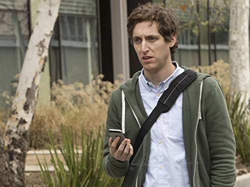
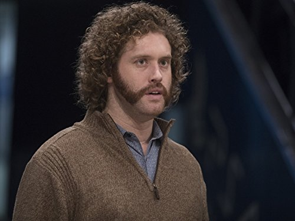
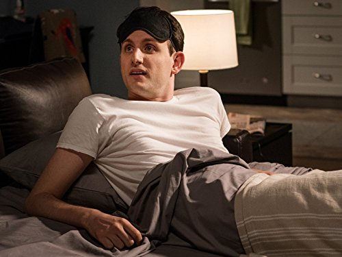
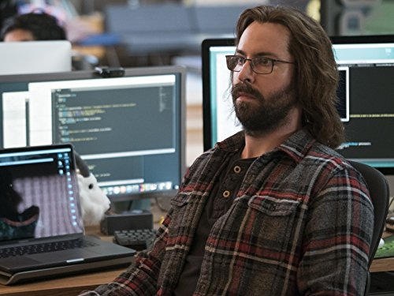
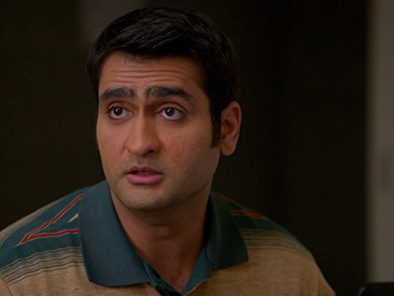

"Thomas Middleditch as Richard Hendricks, a coder who creates a compression algorithm worths billions of dollarss and the CEO of Pied Piper.Despite of being a brilliant coder , Richard has a very poor communication skills so he uses Erlich Bachman " a character we'll discuss later" to pitch his ideas to the investors!......to learn more about this actor please click on the attached image."
"T.J. Miller as Erlich Bachman , an entrepreneur who runs an innovation incubator in his house and owns 10% of Pied Piper. He is known as the man who knows how to play the orchestra something like a mestro or more like steve jobs . He helps Richard alot he always tells him " You will always be my woziniak and I will always be your Jobs" like steve jobs and steve woziniak co-founders of Apple 😄.......to learn more about this actor please click on the attached image."
"Zach Woods as Donald "Jared" Dunn, an ex-VP of Hooli who quits the company in order to join the Pied Piper team as its COO and business advisor. Jared is the human model for a dog seriously 😂 he is so loyal and he takes care of Richard as if he was his mother .the rest of the group hates Jared at the beginning but by the end they will all be good feiends ..........to learn more about this actor please click on the attached image."
"Martin Starr as Bertram Gylfoil, the network engineer of Pied Piper who is known for his stolid and sardonic personality. Gylfoil was the only one in the group who can deal with the hardware side..he masters it , at a certain moment the folk has a server problem so he builds a server with his bare hans in their garage. He might sound creepy which is right but he is with no doubt a fascinating engineer.......to learn more about this actor please click on the attached image."
"Kumail Nanjiani as Denish Chugtai, a programmer specializing in Java and member of Pied Piper. He is often the victim of Gelfoil's ridicule and pranks, but at the end he and Gelfoil co-founds a very succssfull cyper-cecurity company. Denish is supposed to be a muslim character which is pretty cool because it erase the idea of terrorism from the american audiance's head and shows that the muslim are like any other people..........to learn more about this actor please click on the attached image."
| Actor | Role | Wikipedia |
|---|---|---|
| Josh Brener | as Nelson "Big Head" Bighetti | learn more |
| Amanda Crew | as Monica Hall | learn more |
| Matt Ross | as Gavin Belson | learn more |
| Jimmy O. Yang | as Jian-Yang | learn more |
| Chris Diamantopoulos | as Russ Hanneman | learn more |
| Stephen Tobolowsky | as "Action" Jack Barker | learn more |